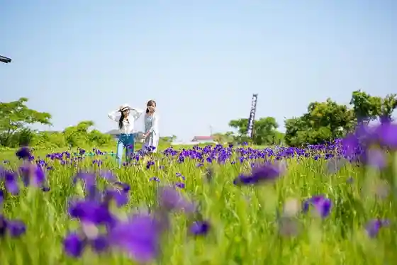
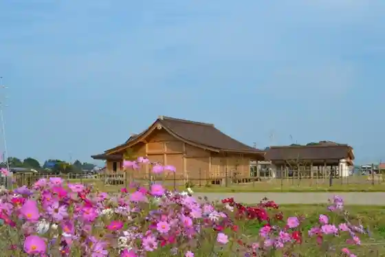
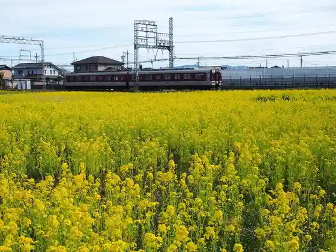
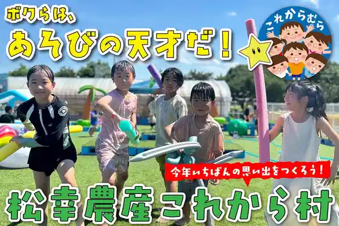

Itsuki no Hanashobu Gunraku (Kaika Joho Mo Keisai)
Meiwa, Mie · 0596-63-5315 · Official / source link

Saiku Heian no Mori
Meiwa, Mie · 0596-52-3890 · Official / source link

Na no Hanahata
Meiwa, Mie · 0596-63-5315 · Official / source link

Matsu Sachi Nosan Korekara Village
Meiwa, Mie · 0120-53-1239 · Official / source link

Itsuki no Kosumosu
Meiwa, Mie · 0596-52-7138 · Official / source link
Itsuki no Miya Chiiki Koryu Center
Meiwa, Mie · 0596-63-5315 · Official / source link
Otate Plaza Otate no Izumi
Meiwa, Mie · 0596-52-7126 · Official / source link
Myojo Shrine
Meiwa, Mie · Official / source link
Take Shrine
Meiwa, Mie · 0596-52-7138 · Official / source link
Itsuki no Miya Rekishi Taiken Kan
Meiwa, Mie · 0596-52-3890 · Official / source link
Itsuki History Museum
Meiwa, Mie · 0596-52-3800 · Official / source link
Ono Minato O Misogi Ba Ato
Meiwa, Mie · 0596-52-7138 · Official / source link
Kagachikara Hassho Kinenhi
Meiwa, Mie · 0596-52-7138 · Official / source link
Kokushi Ato Itsuki Ato
Meiwa, Mie · 0596-52-7138 · Official / source link
Itsuki Ato Rekishi Roman Plaza
Meiwa, Mie · 0596-52-3890 · Official / source link
Awa Sumi Jinja Ato
Meiwa, Mie · 0596-52-7138 · Official / source link
Meiwa Furusato Hall (Folk History Museum)
Meiwa, Mie · 0596-52-7131 · Official / source link
Narihira Matsu
Meiwa, Mie · 0596-52-7138 · Official / source link
Take Sassa Otto Ko Angu Ato
Meiwa, Mie · 0596-52-7138 · Official / source link
Ken'ei Daibutsu Yama Park
Meiwa, Mie · 0596-23-6565 · Official / source link
Meiwa Tourist Information
Meiwa, Mie · 0596-52-0055 · Official / source link
Oyodo Nishi Coast Mun Beach Campground
Meiwa, Mie · 0596-55-3946 · Official / source link
Historic Site Mizuike Doki Seisaku Iseki
Meiwa, Mie · 0596-52-7138 · Official / source link
Rekishi no Michi
Meiwa, Mie · 0596-52-7138 · Official / source link
Anyoji
Meiwa, Mie · 0596-55-5548 · Official / source link
Itsuki Ike
Meiwa, Mie · 0596-52-7138 · Official / source link
Saio Forest
Meiwa, Mie · 0596-52-7138 · Official / source link